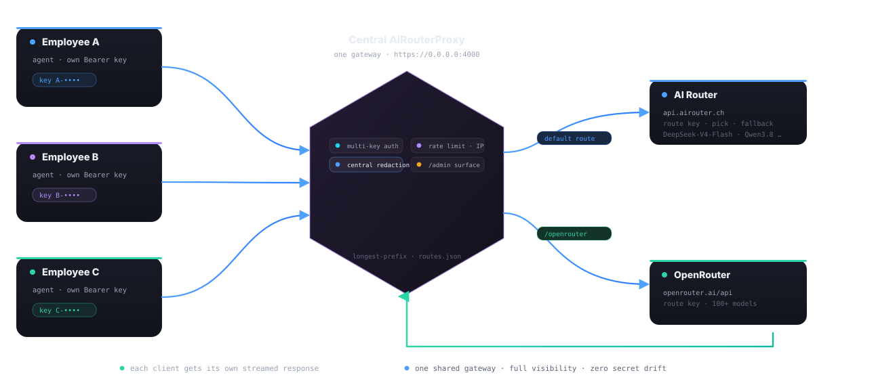

One gateway for the whole team
Every engineer runs their own coding agent. Behind one central proxy, every engineer gets their own key, the team shares one redaction policy, and the routes fan out into the AI providers each workflow needs.

What running it centrally buys you
⚿Key per engineer
Rotate one key without touching the others. A departing colleague costs one entry in LocalKeys — not a re-deploy. Each refusal is logged with a key hash, so you know who failed.
↯Per-IP rate limits
120 req/min per client by default, with a real lockout after 10 failures. A runaway agent or a script gone wild gets 429 — your upstream doesn’t even notice.
✧Company-wide redaction
One redaction.json decides what is masked for everyone: internal IDs, filesystem prefixes, database credentials — applied at the gateway, so no agent needs to remember.
◈Route per provider
Default route to your AI Router for cost control, /openrouter for the long tail of models. Each route carries its own key and its own allowed-path guards.
☰One admin surface
Health, routes, redaction state, activity and refusals — all under /admin, protected by the same local key, and never leaking key values.
≋SSE preserved
Token streaming keeps working for every client at once — each connection gets its own stream, redacted and annotated as it flows.
allow prefixes (e.g. ^INT-, ^PROJ_) on the deployed redaction.json side, and treat the repo copy as a neutral example. The proxy hot-reloads config — policy changes propagate without restarts.